S19 — How does a microwave heat food?
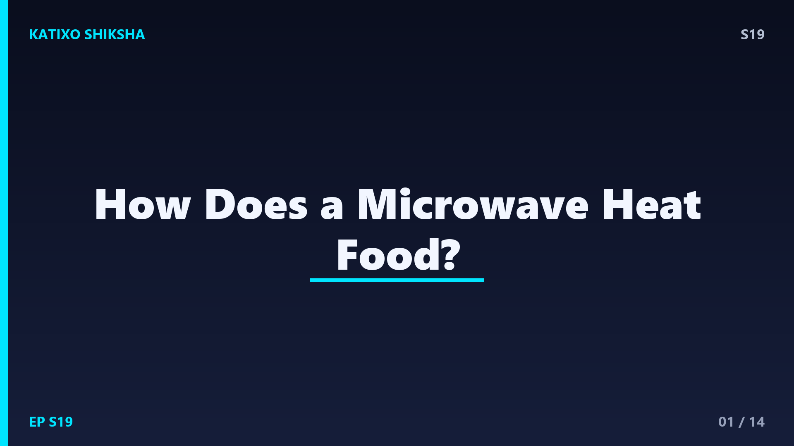
Slide 1दोस्तों, ठंडा खाना microwave में रखा, दो मिनट बाद वो गरमागरम! कोई आग नहीं, कोई गैस नहीं, फिर भी खाना अंदर से गरम। ये जादू कैसे होता है? और सबसे बड़ी पहेली, microwave के अंदर हवा गरम नहीं होती, सिर्फ खाना होता है, ऐसा क्यों? आज Katixo KhojLab पर हम microwave के इस रहस्य को खोलेंगे और समझेंगे कि कैसे invisible waves तुम्हारे खाने को सेकंडों में गरम कर देती हैं। तैयार हो जाओ, क्योंकि इसके पीछे का science सच में दिमाग घुमा देने वाला है!
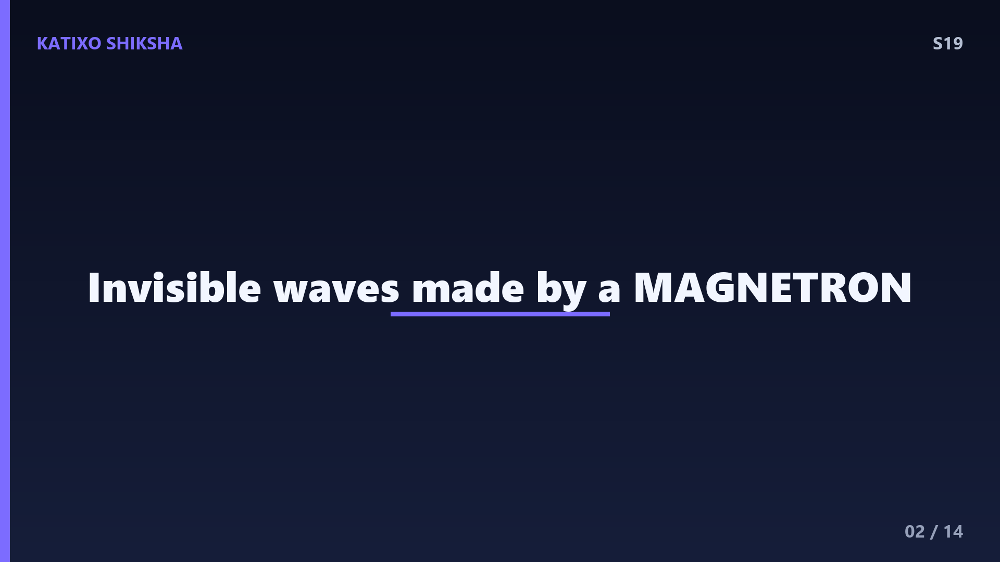
Slide 2सबसे पहले नाम से शुरू करते हैं, दोस्तों। Microwave का मतलब है छोटी waves, यानी एक तरह की electromagnetic waves। ये वैसी ही family की हैं जैसे light, radio waves, और X-rays। पर microwaves न तो हम देख सकते हैं, न महसूस। Microwave oven के अंदर एक खास part होता है जिसे magnetron कहते हैं। यही magnetron बिजली का इस्तेमाल करके ये invisible microwaves पैदा करता है, और इन्हें oven के अंदर के डिब्बे में भेज देता है। यहीं से असली खेल शुरू होता है।
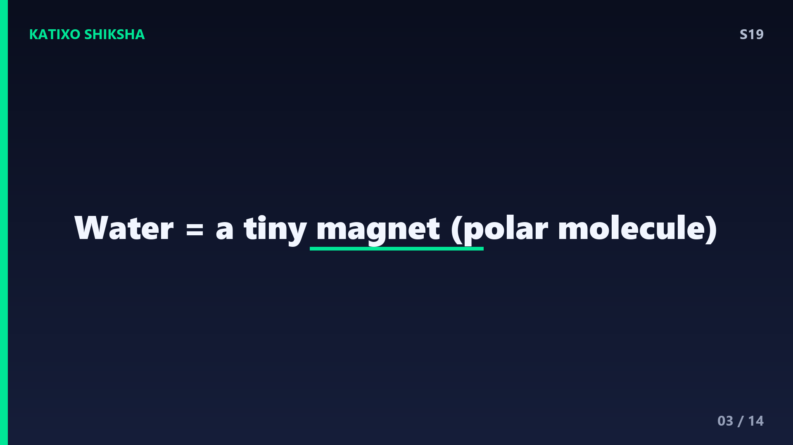
Slide 3अब असली राज़, दोस्तों, और ये है पानी। तुम्हारे लगभग हर खाने में पानी के molecules होते हैं, चाहे वो दाल हो, रोटी हो या सब्ज़ी। पानी का molecule थोड़ा खास होता है, उसका एक सिरा हल्का positive charge वाला और दूसरा negative charge वाला होता है। ऐसे molecule को polar कहते हैं, यानी इसके दो ध्रुव होते हैं, जैसे एक छोटा magnet। यही polar nature पानी को microwaves के लिए perfect target बना देती है। बस यही समझ लो, तो आधा science समझ में आ गया!
Slide 4अब जादू देखो, दोस्तों। जब microwaves खाने तक पहुँचती हैं, तो वो पानी के इन polar molecules को बहुत तेज़ी से घुमाने लगती हैं। Microwave का electric field लगातार दिशा बदलता है, करीब 2.45 अरब बार हर second में! इतनी तेज़ी से इधर उधर बदलते field की वजह से पानी के molecules पागलों की तरह आगे पीछे घूमते हैं, उसकी दिशा के साथ flip करते रहते हैं। सोचो जैसे कोई तुम्हें बार बार दाएँ बाएँ मुड़ने को कहे, इतनी तेज़ी से कि तुम थक के गरम हो जाओ!
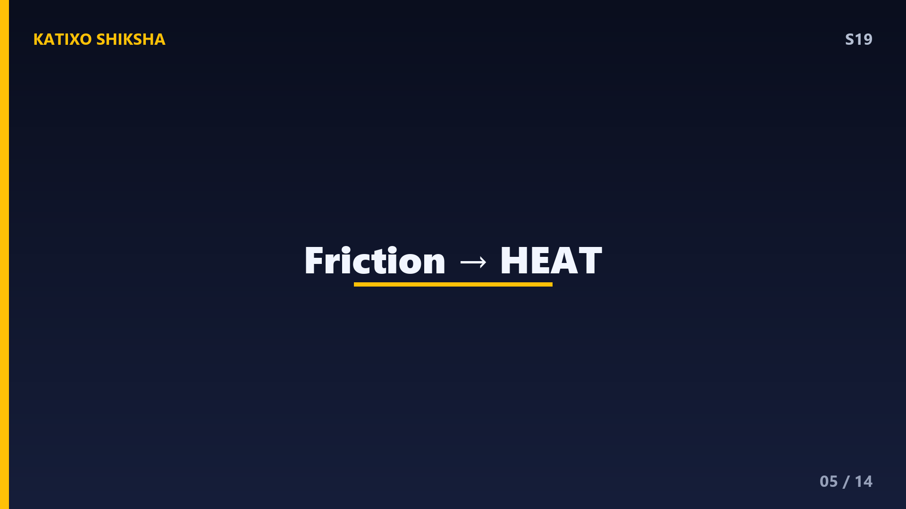
Slide 5अब heat कहाँ से आती है, दोस्तों? जब ये molecules इतनी तेज़ी से घूमते और हिलते हैं, तो वो आपस में रगड़ खाते हैं और एक दूसरे से टकराते हैं। इस रगड़ और टकराव को friction कहते हैं, और friction से heat पैदा होती है, ठीक वैसे जैसे हाथों को आपस में तेज़ी से रगड़ने पर वो गरम हो जाते हैं। यही molecular friction पूरे खाने में फैल जाती है और खाना गरम हो जाता है। तो microwave खाने को नहीं जलाता, बल्कि खाने के अंदर के molecules से ही heat पैदा करवाता है!
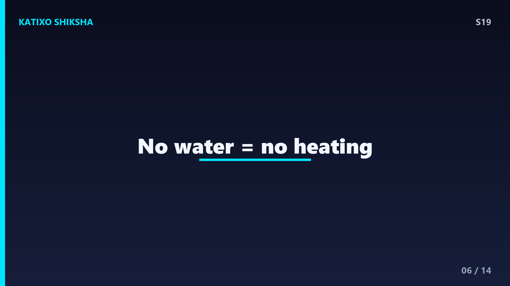
Slide 6अब वो पहेली सुलझाते हैं, दोस्तों, कि microwave की दीवारें या हवा गरम क्यों नहीं होती। इसका कारण है कि microwaves खासकर पानी, fat और sugar के molecules को target करती हैं। Oven के अंदर की हवा में पानी बहुत कम होता है, और plastic या काँच की plate में तो पानी होता ही नहीं। इसलिए microwaves उन्हें almost छोड़ देती हैं और सीधे खाने के पानी पर असर करती हैं। प्लेट जो थोड़ी गरम लगती है, वो असल में गरम खाने के contact से होती है, microwaves से नहीं।
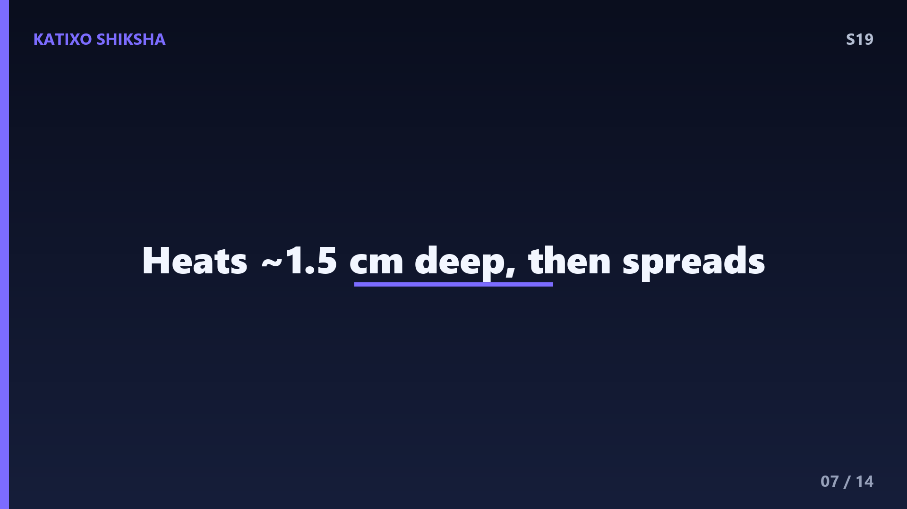
Slide 7अब एक common गलतफहमी दूर करते हैं, दोस्तों। बहुत लोग सोचते हैं microwave खाने को अंदर से बाहर की ओर गरम करता है। ये पूरी तरह सच नहीं है। Microwaves खाने में करीब एक से डेढ़ सेंटीमीटर तक ही घुस पाती हैं। उतनी गहराई तक heat पैदा होती है, और फिर वो heat conduction से धीरे धीरे और अंदर तक फैलती है, जैसे आम चूल्हे में होता है। इसीलिए कई बार खाना बाहर गरम और बीच में ठंडा रह जाता है, और हमें उसे बीच में चलाना पड़ता है।
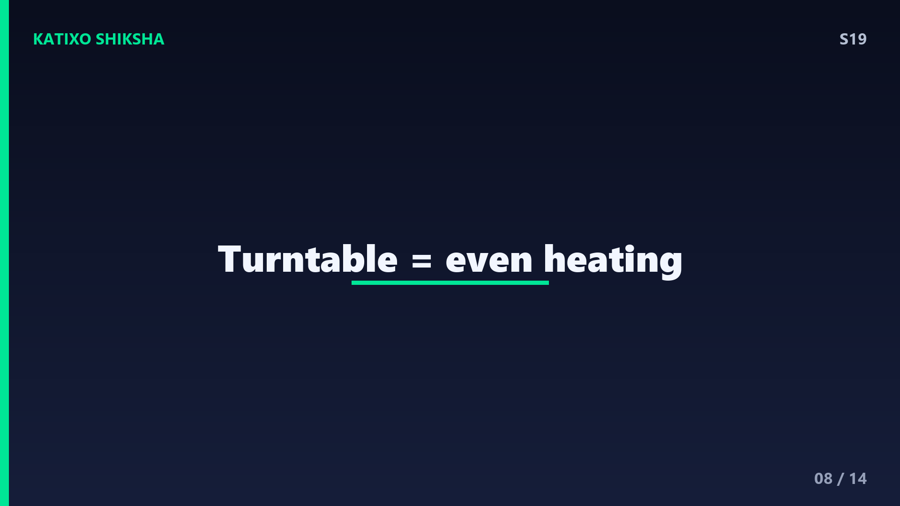
Slide 8अब वो घूमने वाली plate का राज़, दोस्तों। Microwave के अंदर waves दीवारों से टकराकर वापस आती हैं और कुछ जगह आपस में मिलकर ज़्यादा strong हो जाती हैं, कुछ जगह कमज़ोर। इससे hot spots और cold spots बन जाते हैं। अगर खाना एक जगह स्थिर रहे, तो कहीं ज़्यादा गरम और कहीं ठंडा रह जाएगा। इसीलिए नीचे एक turntable होता है जो खाने को घुमाता रहता है, ताकि हर हिस्सा बारी बारी से hot spot में आए और खाना एक समान गरम हो।
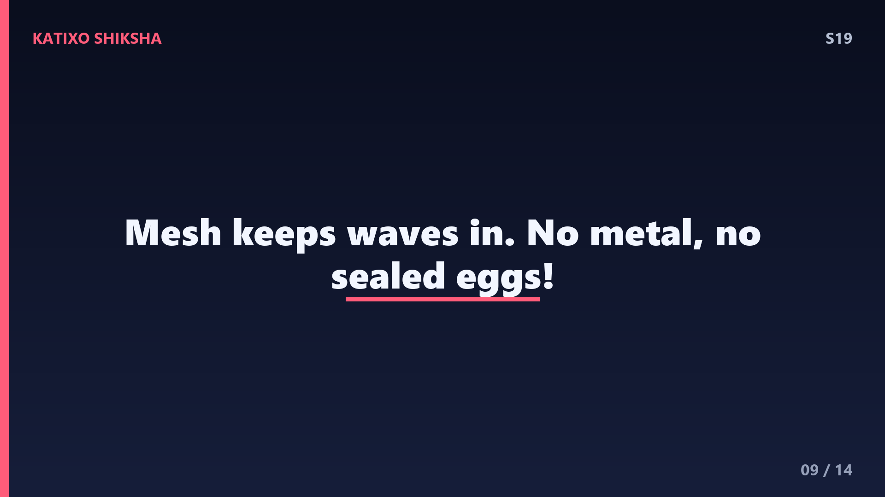
Slide 9अब safety की बात, दोस्तों, ये बहुत ज़रूरी है। Microwave का दरवाज़ा एक metal की जाली से ढका होता है जिसमें छोटे छोटे छेद होते हैं। Microwaves की wavelength इन छेदों से बड़ी होती है, इसलिए वो बाहर नहीं निकल पातीं, पर रोशनी छोटी होने से अंदर दिख जाती है। साथ ही, microwave में कभी भी metal के बर्तन या foil मत रखो, क्योंकि metal में microwaves sparks पैदा कर सकती हैं। और बंद अंडा भी मत रखना, अंदर भाप बनकर वो फट सकता है!
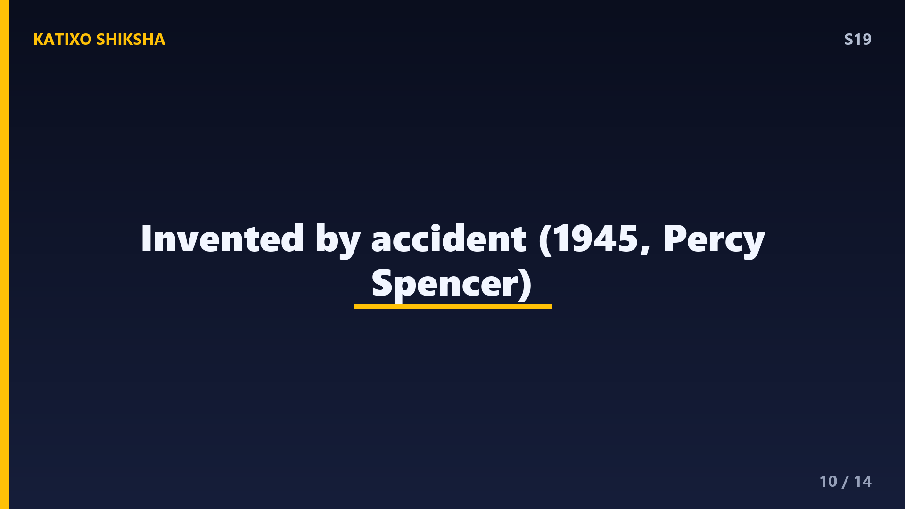
Slide 10एक मज़ेदार इतिहास, दोस्तों। Microwave oven का आविष्कार एक accident से हुआ! 1945 में Percy Spencer नाम का engineer radar पर काम कर रहा था, जो microwaves इस्तेमाल करता था। तभी उसकी जेब में रखी chocolate पिघल गई! उसे शक हुआ, और उसने पास में मक्के के दाने रखे, वो popcorn बन गए। बस यहीं से idea आया कि microwaves से खाना पकाया जा सकता है। तो जो device आज तुम्हारे kitchen में है, वो radar और एक पिघली chocolate की देन है!
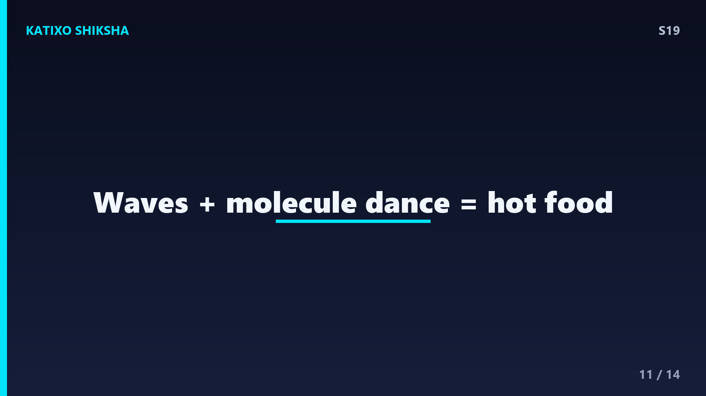
Slide 11तो पूरा process एक बार दोहराते हैं, दोस्तों। Magnetron बिजली से microwaves बनाता है, ये waves oven के अंदर फैलती हैं, खाने के पानी, fat और sugar के polar molecules को तेज़ी से घुमाती हैं, इस घूमने से friction होता है, और friction से heat पैदा होकर खाना गरम हो जाता है। turntable इसे एक समान बनाता है, और metal जाली हमें safe रखती है। कोई आग नहीं, सिर्फ invisible waves और molecules का जबरदस्त dance, यही है microwave का असली science!
Slide 12Quick brain check, दोस्तों! तीन सवाल, और जवाब से पहले video pause करके सोचो। पहला, microwaves खाने में किस चीज़ के molecules को सबसे ज़्यादा घुमाती हैं? दूसरा, molecules के तेज़ी से घूमने और रगड़ने से कौन सी चीज़ पैदा होती है जो खाना गरम करती है? और तीसरा, microwave के अंदर turntable खाने को क्यों घुमाता रहता है? सोचो, याद करो, और अपना जवाब पक्का कर लो। तैयार हो? चलो अगली slide पर जवाब मिलाते हैं!
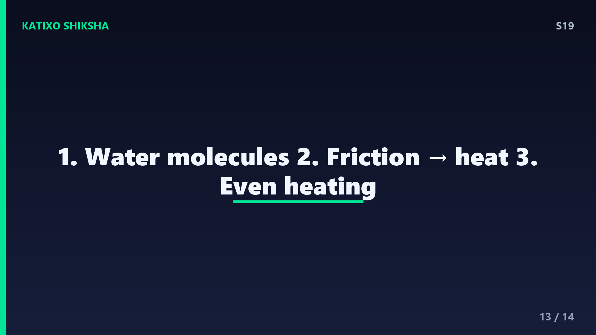
Slide 13तो जवाब देखते हैं, दोस्तों! पहला, microwaves सबसे ज़्यादा पानी के polar molecules को घुमाती हैं, साथ में fat और sugar को भी। दूसरा, molecules के तेज़ी से घूमने और टकराने से friction पैदा होती है, और इसी friction से heat बनती है। और तीसरा, turntable खाने को इसलिए घुमाता है ताकि hot spots और cold spots की वजह से खाना एक जगह कम और दूसरी जगह ज़्यादा गरम न हो, सब एक समान गरम हो। कितने सही हुए? शाबाश!
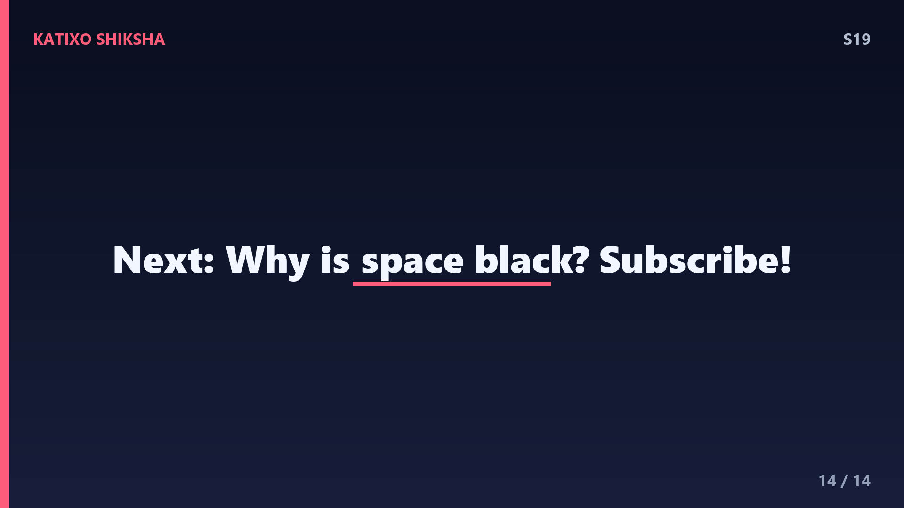
Slide 14तो आज हमने सीखा, दोस्तों, कि microwave आग से नहीं, बल्कि invisible microwaves से खाने के पानी के molecules को घुमाकर, friction से heat पैदा करता है। हवा और plate गरम नहीं होती क्योंकि उनमें पानी नहीं होता। और ये सब एक accident से खोजा गया था! अगली बार microwave चलाओ तो ये molecular dance याद करना। अगले episode में जानेंगे, अगर अरबों तारे हैं तो space काला क्यों दिखता है? तब तक जिज्ञासु बने रहो। Subscribe करना मत भूलना! Bye दोस्तों!